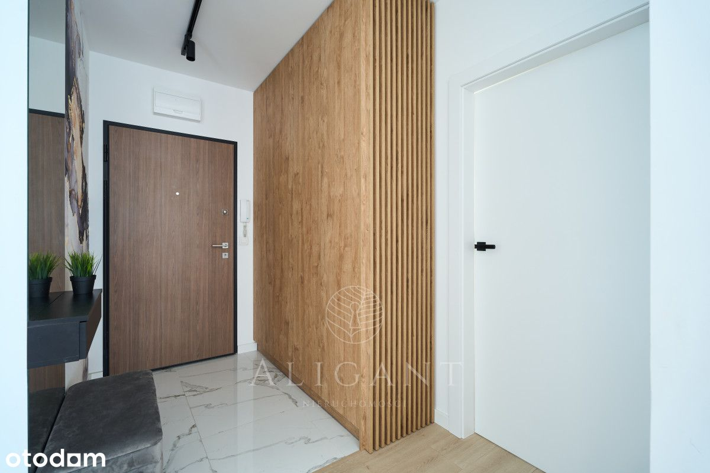
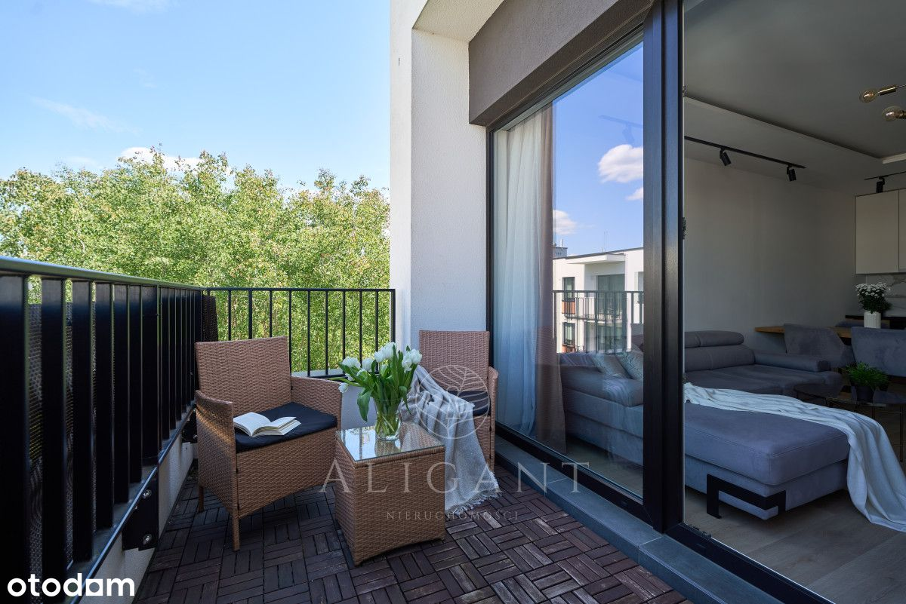
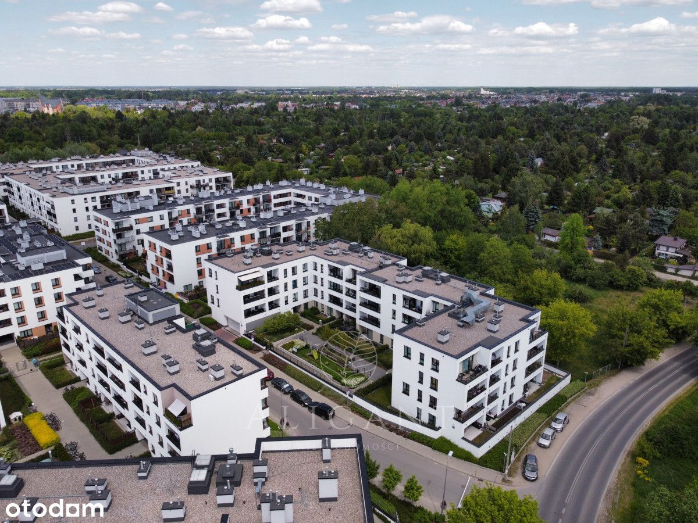
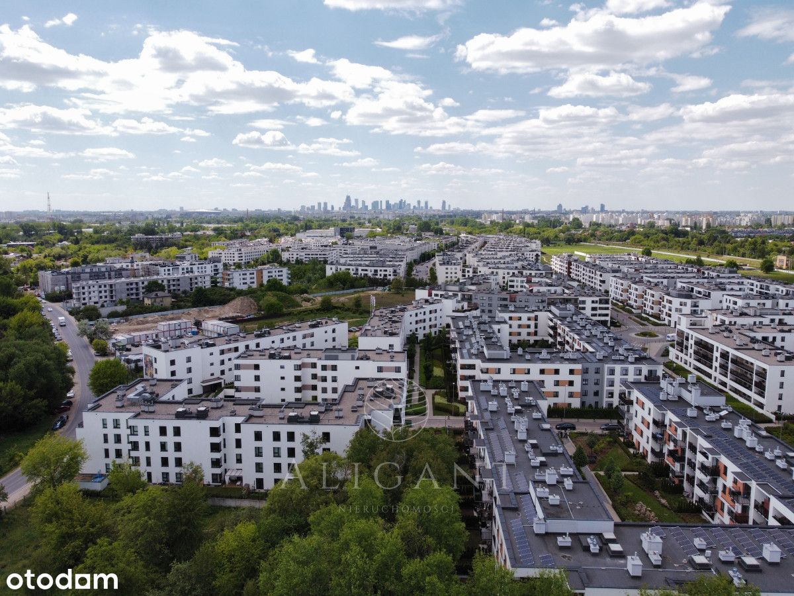
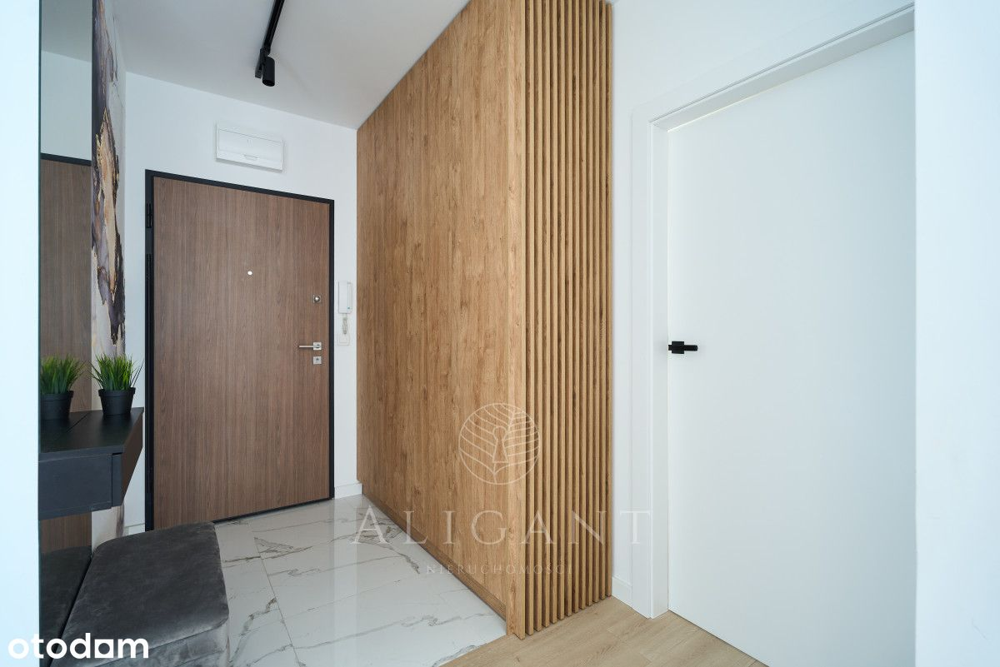
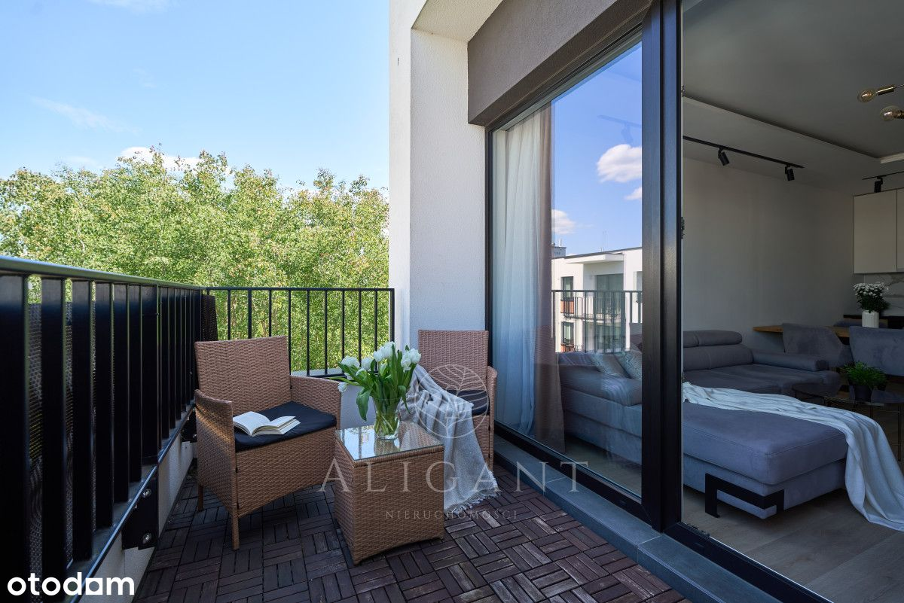
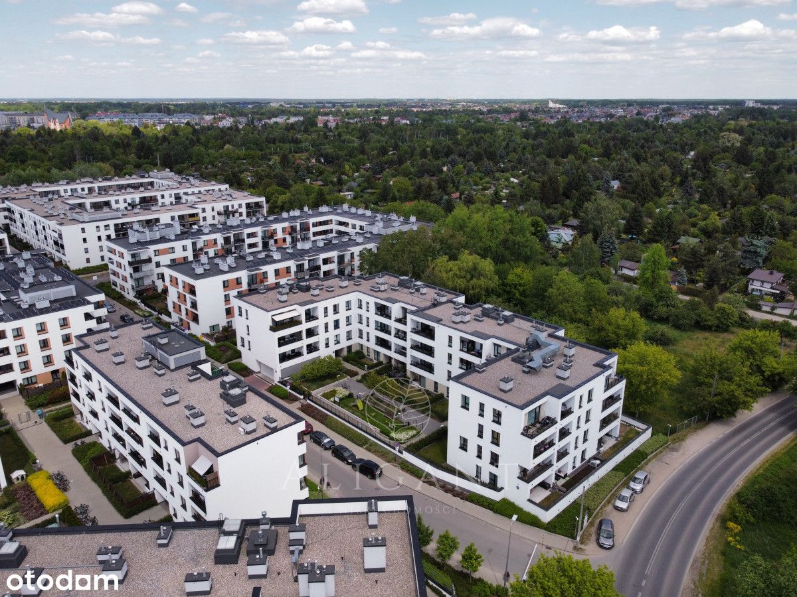
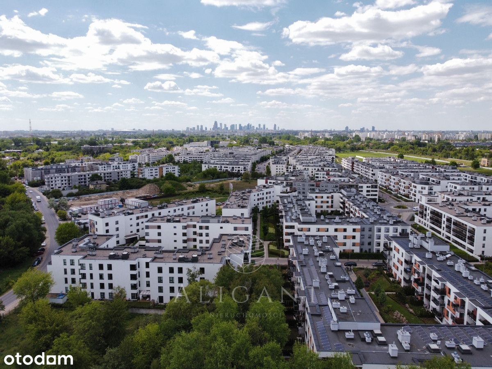

Aligant nieruchomości zaprasza do zapoznania się z ofertą:
W SKRÓCIE:
★ Targówek, ul. Janowiecka 31
★ Rok budynku 2020 r.
★ Powierzchnia 60,11 m2
★ 3 pokoje (w tym salon z aneksem kuchennym) + loggia
★ 3 z 3 pięter
★ Duża loggia
★ Garaż (płatne dodatkowo - 40k)
NIERUCHOMOŚĆ:
Mieszkanie znajduje się na 3 piętrze (3 piętrowy budynek z windą) Osiedle Wilno to ciekawy koncept urbanistyczny położony w prężnie rozwijającej się części Targówka. Ogrodzone osiedle posiada monitoring, dzięki czemu jest tu bezpiecznie. Na terenie inwestycji jest dużo zadbanych terenów wspólnych, placów miejskich oraz alejek. Charakterystyczne dla Osiedla Wilno jest niska zabudowa, wokół której znajduję się dużo zieleni z pięknymi roślinami.
MIESZKANIE:
Lokal o powierzchni 60.11 m², składa się z 3 pokoi w tym przestronnego salonu z aneksem kuchennym, łazienki, przedpokoju, dwóch oddzielnych sypialni oraz dużej loggii - z pięknym widokiem na tereny zielone. Na podłodze znajdują się panele podłogowe oraz gres. Do dyspozycji pozostaje pełne wyposażenie AGD - wysokiej klasy. Większość mebli w mieszkaniu zostało wykonane na wymiar przez stolarza, które są wykonane z bardzo dobrych jakościowo materiałów. Dużym atutem tej nieruchomości jest to że jest bardzo przestronne. W budynku jest zamontowana winda, którą można również zjechać do hali garażowej. Do mieszkania przynależy miejsce parkingowe (płatne dodatkowo - 40k)
LOKALIZACJA:
Lokal zlokalizowany jest na nowym, stylowym osiedlu. Okolica jest cicha i spokojna. W promieniu kilkudziesięciu metrów jest wiele miejsc z bardzo dobrym jedzeniem oraz osiedlowych sklepów spożywczych. Blisko osiedla znajdują się również supermarkety i kompleksy handlowe. Na spacer można się wybrać do sąsiadującego lasu lub nad Zalew Bardowskiego -świetne rozwiązanie dla osób posiadających zwierzęta.
KOMUNIKACJA:
Lokalizacja jest świetna również ze względu na komunikację. Przy osiedlu deweloper wybudował stację PKP dla mieszkańców a stamtąd do Dworca Wileńskiego dojedziemy w 5 minut a tam możemy przesiąść się np. do metra. Obok znajduje się również pętla autobusowa dzięki czemu mamy alternatywny transport.
Zapraszamy do kontaktu z naszym biurem w celu umówienia spotkania i osobistego
zapoznania się z tą wyjątkową ofertą.
_
Jeśli przy zakupie nieruchomości planujesz posiłkować się kredytem odezwij się do nas. Nasz zaufany doradca kredytowy bezpłatnie zweryfikuje Twoją zdolność i przeprowadzi przez cały proces kredytowy od początku do końca.
_
Pośrednik odpowiedzialny za wykonanie umowy pośrednictwa:
Daniel Krych
Doradca ds. Nieruchomości
tel. +48 788 136 227
Niniejsze ogłoszenie jest wyłącznie informacją i nie stanowi oferty w rozumieniu art. 66 § 1 Kodeksu Cywilnego. Dokładamy wszelkich starań, aby informacje przedstawione w naszych ofertach były aktualne i rzetelne. Informacje zawarte w ofercie uzyskano na podstawie oświadczeń sprzedających. Załączony plan nieruchomości jest poglądowy.
Agencja ALIGANT NIERUCHOMOŚCI jest objęta obowiązkiem ubezpieczenia odpowiedzialności cywilnej zawodowej. Posiadamy OC zgodne z Rozporządzeniem Ministra Finansów z dn. 26.04.2019 r. w sprawie obowiązkowego ubezpieczenia odpowiedzialności cywilnej pośrednika w obrocie nieruchomościami (Dz. U. z 2019 r., poz. 804).
Pobieramy wynagrodzenie w formie prowizji za wykonaną usługę pośrednictwa.
Bierzemy odpowiedzialność za bezpieczeństwo przeprowadzanych przez nas transakcji.
 
